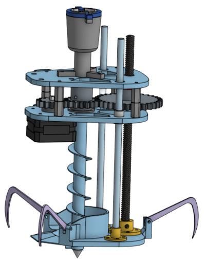

Project Overview
Team Farming Challenge is developing an autonomous soil testing drone in partnership with an MIT
research program to revolutionize precision agriculture for small organic farms. Our system provides
farmers with quantitative insights about soil health and moisture levels, reducing water usage and labor
by replacing manual soil checking methods.
The innovation is currently undergoing patent review, and our team is collaborating on a scientific
journal publication documenting our novel approach to aerial soil sampling. As the mechanical
engineering lead, I designed and fabricated the core soil sampling mechanism that enables autonomous
depth-profiled moisture measurements.
The Problem
Small organic farms face a critical challenge: current soil moisture assessment methods are inefficient
and imprecise. Farmers rely on manual checking—walking fields, digging holes, and using the "hand feel"
method to estimate moisture levels. This approach is:
- Labor-intensive: Requires significant time to sample multiple field locations
- Subjective and imprecise: Provides only vague understanding of soil conditions
- Limited spatial coverage: Cannot efficiently sample enough locations for precision
irrigation
- Constraining farm efficiency: Prevents optimization of water usage and crop health
Existing automated solutions either require expensive embedded sensor networks (costly for small farms)
or use satellite/remote sensing (limited to top 5-10cm of soil with low resolution). Our drone-based
approach fills this gap by providing affordable, high-resolution, depth-profiled soil moisture data
across entire fields.
Our Solution: Autonomous Soil Testing Probe
The Farming Challenge system combines autonomous drone navigation with a novel mechanical soil sampling
probe to collect quantitative soil moisture measurements at precise GPS-tagged locations across farm
fields:

System Components
- Autonomous Navigation: Camera, IMU, and LIDAR sensors enable the drone to map farm
terrain, avoid obstacles, and determine optimal sampling locations
- Precision Soil Probe: Custom-designed auger-based insertion mechanism penetrates 6
inches into soil to measure moisture profiles
- Capacitive Moisture Sensors: TEROS 54-style sensors provide accurate volumetric
water content measurements at multiple depths
- Data Visualization: Real-time measurements transmitted to ground station for
farmer-friendly visualization and irrigation planning
- GPS Localization: Each sample tagged with precise coordinates for repeatable
monitoring and spatial analysis
Mechanical Design: Aerial Soil Sampling Device
As mechanical engineering lead, I designed the core soil sampling mechanism—the most critical technical
challenge of the project. The probe must insert 18 inches into compacted clay soil, collect accurate
measurements, retract cleanly without debris accumulation, and repeat this process autonomously while
carried by a drone with strict payload limits.
Design Requirements
Our team established rigorous functional requirements and constraints through stakeholder interviews
with organic farmers and literature review of soil sampling methods:
Functional Requirements
- Probe soil moisture across 6-inch depth
- Achieve ±5% measurement accuracy with proper sensor insertion
- Penetrate all soil types: sand, silt, and clay (designed for worst-case clay)
- Insertion success rate >95% across 30+ samples per battery cycle
- Clean retraction without debris accumulation affecting subsequent samples
- Minimal soil disturbance to avoid damaging crops
- Operate 30 minutes on single battery charge
Design Constraints
- Total payload mass <600g (Holybro X500 drone platform limitation at 90% throttle)
- Footprint compatible with X500 landing gear and center of gravity
- Rapid deployment/removal for field testing iterations
- Robust to field conditions: moisture, dirt, vibration, repeated impacts
Design Process & Concept Development
We followed a rigorous mechanical design process, beginning with extensive concept generation,
functional decomposition, and prototype-driven validation:
Concept Generation
Initial brainstorming produced diverse insertion mechanisms:
- Spring-loaded harpoon: Rapidly fire probe into soil using compressed spring energy
- Sliding hammer mechanism: Iterative impact force to drive probe downward
- Screw-type auger with reaction anchor: Rotating drill bit pulls itself into soil
while anchors resist rotation
- Linear actuator with passive spikes: Electric motor drives lead screw while passive
anchors stabilize
- Dual-motor belt drive: Separate motors for auger rotation and vertical feed
Throughout prototypes and meetings, we converged on the auger-based design
with anchoring spikes and decided on a single motor gear drive system as optimal for
reliability,
precision depth control, and scalability while not being too heavy for the drone. Although, to find the
optimal gear ratio of linear motion and turning of the probe, a two motor version was originally built:
Final Mechanical Design
The production design features a single motor gear driven system with precision lead screw depth control
and passive anchoring mechanism:
Key Mechanical Components
Auger Probe Assembly
- Custom-welded counterclockwise auger thread (20mm pitch) on 12mm diameter shaft
- Lathe-machined shaft for precise tolerances and linear bearing compatibility
- Integrated capacitive soil moisture sensor (TEROS 54 style) with dual-prong configuration
- Probe extends beyond sensor tip to prevent debris accumulation around sensing elements
Drive System
- 25kg/cm Servo Motor: Servo used for light weight and high torque
- Custom 3D printed Gears: 3D printed gears to keep cost low and to allow for quick
iterations
- Lead screw mechanism: 8mm diameter, 2mm pitch, 4-start trapezoidal thread with
metal lead nut (replaced plastic for durability)
Structural & Guidance
- Linear guide rails: Dual 0.25" Aluminum shafts with flanged supports and
bronze bushings
- Thrust bearings: Axial load management for auger rotation forces
- Base plate assembly: Mounting plate integrating all subsystems
- Top stabilization plate: Prevents cantilever wobble and auger jamming during
insertion
Anchoring Mechanism
- Passive spike anchors extending diagonally outward during soil insertion
- Increased moment arm resists auger rotation torque transferred to drone body
- Spring-loaded deployment tested in grass and soft soil
- Powered by cheap and lightweight 9g servo
Prototype Testing & Validation
We conducted extensive testing of the 6-inch prototype before scaling to the full 18-inch design:
Bench Testing in Controlled Soil
Initial validation used bucket testing with sand, silt, and clay soil samples to quantify insertion
force, depth precision, and measurement repeatability:
Prototype testing in bucket with clay soil
Key Testing Results
- Insertion success rate: 97% across 30 test cycles in clay soil (exceeding 95%
requirement)
- Depth accuracy: ±2mm deviation from commanded depth using lead screw position
feedback
- Debris management: Extended probe tip successfully prevented sensor fouling in
28/30 tests
- Power consumption: Average 15W during insertion, enabling 30+ samples on 2200mAh
LiPo battery
- Measurement repeatability: ±3% variation in moisture readings at same soil depth
across multiple insertions
Impact & Results
Technical Achievements
- 97% insertion success rate in clay soil, exceeding 95% design requirement
- ±2mm depth accuracy enabling precise repeatability for temporal monitoring
- 570g total assembly mass within 600g payload constraint
- 30+ samples per battery charge covering typical 5-acre farm field
- ±3% measurement repeatability validating sensor integration quality
- Patent application submitted for novel aerial soil sampling mechanism
- Scientific journal paper in progress documenting system design and field validation
Technical Skills Developed
- Mechanical Design: SolidWorks CAD modeling, tolerance analysis, design for
manufacturing
- Fabrication: Lathe machining, TIG welding, jig design, precision assembly
- Systems Engineering: Functional decomposition, requirements derivation, stakeholder
interviews
- Concept Development: Brainstorming, Pugh's matrix analysis, prototype-driven
validation
- Motion Control: Stepper motor programming, belt drive design, lead screw kinematics
- Sensor Integration: Capacitive soil moisture sensors, calibration, signal
processing
- Testing & Validation: Experimental design, data analysis, field testing protocols
- Technical Communication: Patent writing, journal paper drafting, stakeholder
presentations
- Project Management: Sprint planning, team coordination, timeline management
← Back to All Teams